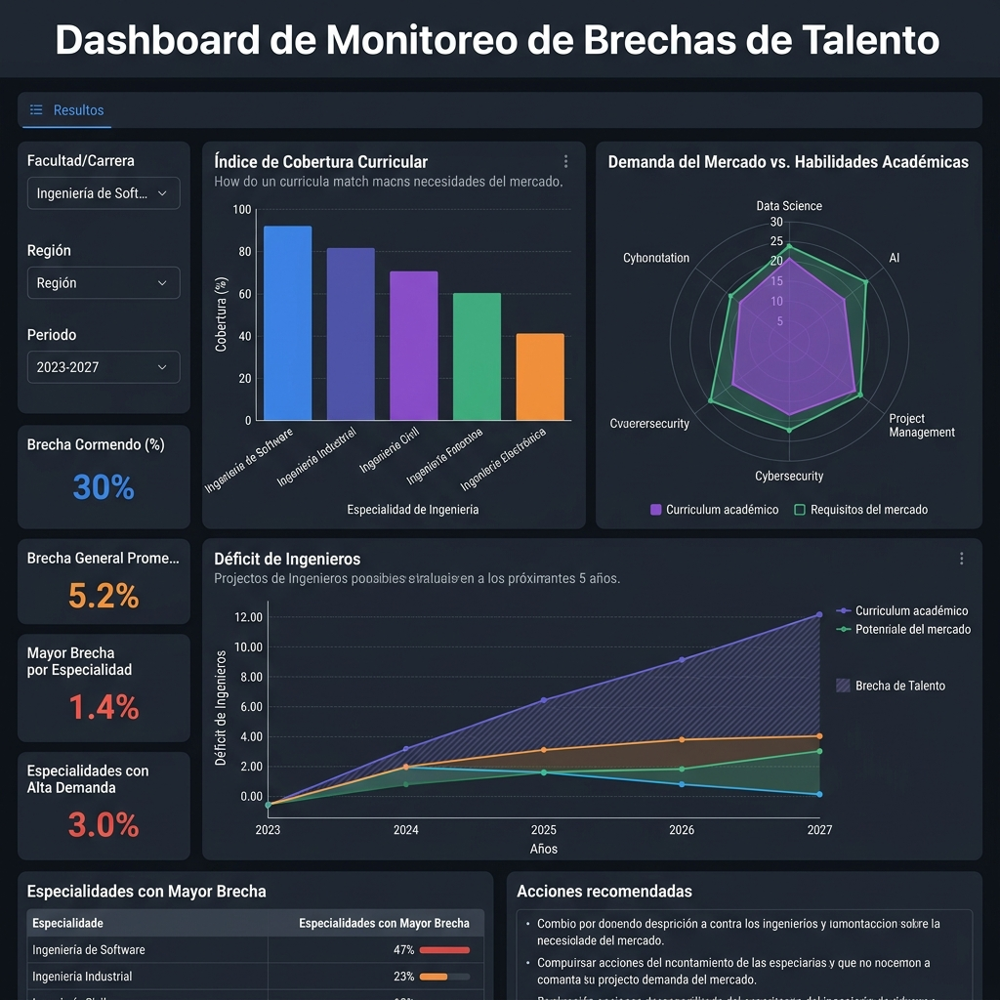

Autor: Juan José Díaz
Afiliación: Investigador Independiente / Consultor de Entorno Tecnológico y Educación Superior
Contacto: jdiaz@utesa.edu
Fecha: Mayo de 2026
Objetivo: Analizar la correspondencia entre la demanda laboral tecnológica observable en vacantes de plataformas digitales de empleo y la oferta curricular de grado de las principales instituciones de educación superior (IES) en la República Dominicana durante el período 2025–2026.
Metodología: Se adoptó un diseño no experimental, descriptivo, transversal y comparativo. Se realizó una auditoría empírica mediante el análisis sistemático de una muestra analizada de
Resultados: El análisis identificó brechas o desalineaciones significativas en disciplinas críticas. Se constató una ausencia absoluta de programas de grado completos (0% de cobertura) para la Ingeniería de Datos y de un 80% para metodologías de despliegue en la nube (DevOps/Cloud Computing), contrastando con una frecuencia observada del 98% de requerimientos de arquitecturas de Inteligencia Artificial Agéntica y 91% de infraestructura como código (IaC) en las vacantes analizadas. En ingenierías STEAM tradicionales se identificaron desalineaciones relevantes en IoT industrial, BIM/construcción digital, almacenamiento BESS, microrredes, movilidad eléctrica y analítica de operaciones.
Conclusiones: Existe una marcada brecha cualitativa entre las competencias tecnológicas demandadas en el mercado laboral y los planes de estudio vigentes. Se proponen tres programas curriculares prioritarios diseñados a partir de la evidencia recolectada para mitigar el déficit y contrarrestar la fuga de talentos impulsada por la contratación remota internacional.
Palabras clave: Brecha de Habilidades, Educación Superior, PESTEL Tecnológico, Ciberseguridad, República Dominicana, Currículo Basado en Datos, Análisis Comparativo.
El desarrollo y competitividad de las economías emergentes del Caribe se encuentran intrínsecamente ligados a su capacidad de absorción y asimilación de tecnologías de frontera. En el caso de la República Dominicana, el crecimiento económico sostenido del Producto Interno Bruto (PIB) proyectado en un rango del 3.5% al 4.5% para el año fiscal 2026 por el Banco Mundial (2025) ejerce una presión directa sobre la infraestructura productiva local. Este fenómeno se enmarca en políticas estatales explícitas como la Agenda Digital 2030, formalizada bajo el Decreto Presidencial No. 427-21 (Presidencia de la República Dominicana, 2021), que busca el cierre acelerado de las brechas de conectividad y la digitalización de los procesos estatales. No obstante, las asimetrías del mercado de talento representan el principal cuello de botella sociotécnico, registrando un preocupante 40% de empleadores que experimentan escasez para cubrir vacantes tecnológicas avanzadas (ManpowerGroup, 2025).
Este desbalance estructural es validado empíricamente por la Asociación Nacional de Jóvenes Empresarios (ANJE, 2023) en su estudio de referencia Formación del talento humano frente a la demanda actual y futura de la República Dominicana, el cual revela que el 54% de las empresas dominicanas reporta dificultades significativas para contratar personal calificado, obligando al 38% de las firmas a destinar recursos financieros adicionales a la nivelación formativa post-contratación. Asimismo, la Asociación Dominicana de Rectores de Universidades (ADRU, 2024) ha subrayado en sus foros de vinculación universidad-empresa la urgencia de reestructurar la oferta académica nacional. Esta necesidad se hace evidente al analizar la distribución de la matrícula de educación superior en el país: el 45% de la matrícula total se concentra de forma persistente en apenas cinco carreras tradicionales de bajo crecimiento salarial (Educación, Psicología, Contabilidad, Derecho y Medicina), mientras que solo el 12% de los estudiantes se inscribe en disciplinas STEM (Ciencias, Tecnología, Ingeniería y Matemáticas) e idiomas, reduciéndose a un crítico 3% la tasa de estudiantes en el nivel técnico superior, a pesar de ser uno de los perfiles más demandados por el tejido productivo nacional (ANJE, 2023; ADRU, 2024). Estas asimetrías y barreras de contratación a nivel sistémico coinciden de manera robusta con los hallazgos oficiales de la Encuesta Nacional para la Detección de Necesidades de Habilidades y Cualificaciones en el Empleo (ENDHACE 2020), elaborada conjuntamente por la Oficina Nacional de Estadística (ONE) y el Ministerio de Economía, Planificación y Desarrollo (MEPyD, 2020); dicha encuesta constató que el 70.7% de las empresas formales del país contaron con plazas vacantes en los 12 meses previos a la encuesta, y de estas, un alarmante 42.5% experimentó serias dificultades para encontrar postulantes idóneos debido a la insuficiencia de postulantes con las competencias técnicas requeridas, confirmando un descalce curricular histórico que ha lastrado la productividad empresarial nacional (ONE & MEPyD, 2020).
Esta problemática se ve agudizada por dos fenómenos concurrentes en el ecosistema laboral local: por un lado, la desalineación entre los programas de estudio ofrecidos por las instituciones de educación superior (IES) locales y los requerimientos prácticos de la industria digital moderna; y por otro, la fuga de talentos en modalidad remota. Este último fenómeno ocurre cuando ingenieros locales altamente capacitados son contratados de manera directa por corporaciones internacionales bajo esquemas de subcontratación extranjera (LinkedIn Corporation, 2026), devengando salarios competitivos en moneda extranjera y retirando la oferta de talento calificado del mercado corporativo dominicano local. Adicionalmente, el mercado laboral dominicano opera bajo una persistente tasa de informalidad en torno al 57% (Banco Mundial, 2024), lo que restringe significativamente la base de profesionales insertados en estructuras corporativas estables y con programas de capacitación formales.
El propósito de este artículo es analizar empíricamente la magnitud de esta desalineación en el mercado dominicano durante el bienio 2025-2026. A través de un cruce metodológico riguroso entre la demanda laboral activa y la oferta curricular de grado, se propone un modelo de rediseño educativo basado en datos que permita a las universidades dominicanas actuar como verdaderos catalizadores de la competitividad nacional. En consecuencia, la pregunta de investigación central que guía este estudio es: ¿cuál es el grado de correspondencia entre las competencias tecnológicas emergentes observables en vacantes digitales y la oferta curricular de grado de las principales instituciones de educación superior de la República Dominicana durante el período 2025–2026?
Para comprender la demanda de perfiles tecnológicos en un país en desarrollo, resulta insuficiente examinar el software de manera aislada. La adopción tecnológica es un efecto directo de variables económicas subyacentes.
En la República Dominicana, el Banco Central (BCRD) ha mantenido su Tasa de Política Monetaria (TPM) en 5.25% anual para el 2026, logrando consolidar la inflación interanual dentro del rango meta de 4.0% ± 1.0% (Banco Central de la República Dominicana, 2025). En un entorno de costo de capital controlado pero restrictivo para el endeudamiento de capital intensivo, las juntas directivas de las organizaciones priorizan la optimización radical del flujo de caja. Esto incentiva de manera directa la transición del presupuesto tecnológico de CapEx (gasto de capital en servidores físicos e infraestructura local) hacia OpEx (gasto operativo mediante nubes elásticas de pago por uso), en concordancia con los marcos de transición presupuestaria sugeridos para mercados emergentes (Banco Mundial, 2025).
Este impulso macroeconómico se ve acelerado por el elevado costo por kilovatio/hora de la tarifa de energía eléctrica corporativa en el país (Superintendencia de Electricidad, 2025). Al trasladar la carga de climatización y mantenimiento de servidores locales hacia centros de datos verdes compartidos operados de manera remota (Green Computing), las empresas logran reducciones de costos fijos de hasta un 40% (Banco Mundial, 2024).
A nivel institucional, esta presión energética y de costos fijos se formaliza a través de directrices estatales como la Resolución R-MEM-ADM-019-2026 del Ministerio de Energía y Minas (2026). Dicha regulación establece directrices obligatorias de eficiencia y ahorro energético para todos los órganos y entes gubernamentales (climatización mínima a 22 °C, desconexión física de equipos para erradicar el consumo vampiro/standby y prohibición de procesos intensivos en horas de potencia de punta), con reportes trimestrales mandatorios. Este marco normativo no solo impulsa una cultura de austeridad en el gasto público, sino que genera una demanda imperativa de profesionales capaces de diseñar e integrar soluciones técnicas avanzadas como sistemas inteligentes de monitoreo de energía (IoT), almacenamiento en baterías BESS, microrredes elásticas y optimizaciones automatizadas de carga, impactando directamente en la justificación de programas de grado en Ingeniería en Energías Renovables y Eficiencia Energética en el país.
La literatura internacional sobre el futuro del empleo postula que la automatización y la inteligencia artificial redefinirán drásticamente las tareas laborales. El World Economic Forum (2025) estima que el 66.3% de las empresas requerirán estrategias intensivas de reskilling y reentrenamiento interno en los próximos años para mantener su competitividad operativa frente a los modelos generativos.
En el plano local, este requerimiento se vuelve crítico ante la baja tasa de trabajadores dominicanos con habilidades digitales intensivas, estimada en apenas un 10% del total de la fuerza laboral calificada (Banco Mundial, 2025). Asimismo, el Programa de las Naciones Unidas para el Desarrollo (PNUD, 2025) señala que el 68.9% de los dominicanos con acceso a internet ya utiliza herramientas de Inteligencia Artificial de manera semanal. Esta rápida adopción informal de los usuarios contrasta severamente con la oferta de carreras estructuradas en las IES locales, donde áreas críticas como la Ciberseguridad enfrentan deficits regionales masivos de más de 329,000 profesionales en toda Latinoamérica (ISC², 2025).
Este patrón contradictorio de hiperconectividad de consumo frente a la baja capacidad de producción técnica se confirma estructuralmente al cruzar los hallazgos de la Encuesta Nacional de Hogares de Propósitos Múltiples (ENHOGAR-2024), publicada por la Oficina Nacional de Estadística (ONE, 2025): aunque el 91% de la población dominicana declara utilizar internet de forma activa y el 94.7% de los hogares dispone de al menos un teléfono celular, apenas el 58.3% de los hogares dominicanos cuenta con una conexión fija y estable a internet en su vivienda. Esta asimetría material demuestra que la conectividad en el país es predominantemente móvil y orientada al consumo recreativo o relacional, limitando el acceso de los jóvenes a la infraestructura de cómputo y banda ancha fija necesaria para el desarrollo autónomo de competencias complejas asociadas a las ingenierías STEAM de vanguardia.
En respuesta a esta brecha de capacidades a nivel público, el Ministerio de Administración Pública (MAP) emitió la Resolución núm. 342-2024, la cual reestructura las áreas de Tecnologías de la Información y Comunicación (TIC) de las instituciones estatales mediante la creación obligatoria de dos unidades especializadas: Transformación Digital y Ciberseguridad (Ministerio de Administración Pública, 2024). A fin de retener el talento altamente cotizado en el sector corporativo, esta normativa introduce un Nomenclátor de Cargos Comunes estandarizando perfiles avanzados como Ingeniero de Datos, Arquitecto de Datos, Ingeniero de Ciberseguridad y Oficial de Ciberseguridad. Este paso representa una validación legal e institucional de primer orden, ya que formaliza por primera vez en la burocracia estatal cargos que tradicionalmente eran ad-hoc, sirviendo como un catalizador directo y una justificación institucional para el fortalecimiento de programas académicos en ingeniería de datos, ciberseguridad e inteligencia artificial.
La presente investigación adoptó un diseño no experimental, de enfoque cuantitativo, corte transversal y alcance descriptivo-comparativo. Para garantizar la consistencia analítica, el estudio operacionaliza el entorno macroeconómico y regulatorio a través de variables e indicadores formales reportados por el Banco Central de la República Dominicana (Banco Central de la República Dominicana, 2025) y los informes de país del Banco Mundial (Banco Mundial, 2024, 2025), sirviendo como marco de control de contexto para el análisis de las dinámicas del mercado de empleo local.
graph TD
A["Fase 1: Auditoría de Mercado (N = 188 Vacantes)"] --> D["Normalización y Codificación Temática"]
B["Fase 2: Mapeo Curricular (N = 9 Universidades)"] --> E["Cálculo del Índice de Cobertura Curricular Ponderado"]
C["Fase 3: Cruce Macro PESTEL (BCRD, ONE & BM)"] --> F["Modelo de Impacto y Alineación Curricular"]
D & E & F --> G["Identificación de Brechas e Inferencia Curricular STEAM"]Para cuantificar la demanda de competencias STEAM de vanguardia, se realizó una auditoría empírica sistemática de vacantes de empleo activas en la República Dominicana durante el período de enero a mayo de 2026. La recolección de datos se implementó mediante consultas estructuradas y procedimientos semiautomatizados sobre vacantes públicamente visibles en LinkedIn Jobs y BeBee (LinkedIn Corporation, 2026; BeBee & Tu Empleo RD, 2026).
Filtros y Procedimiento Muestral:
La muestra bruta inicial de ofertas de empleo capturadas ascendió a 342 registros. Para conformar la muestra analítica final, se aplicaron de forma rigurosa los siguientes criterios metodológicos:
Tras aplicar estos criterios, la muestra analítica final quedó constituida por
Operacionalización y Diccionario de Codificación de Habilidades:
A fin de asegurar la confiabilidad interevaluador y mitigar el sesgo subjetivo de clasificación, se estructuró un diccionario de operacionalización de variables basado en la coincidencia de palabras clave y habilidades exigidas en el texto de las ofertas:
La confiabilidad interevaluador se estimó sobre una submuestra aleatoria del 25% de las vacantes. Dos evaluadores independientes clasificaron de forma ciega las categorías tecnológicas de las ofertas seleccionadas. El nivel de acuerdo fue evaluado mediante el coeficiente Kappa de Cohen, obteniéndose un
Delimitación y Sesgo Muestral: La representatividad geográfica de la muestra de vacantes está fuertemente ponderada hacia los núcleos urbanos metropolitanos y de desarrollo logístico del país (Santo Domingo, Santo Domingo Oriental, San Cristóbal y Santiago de los Caballeros). Asimismo, las vacantes capturadas en interfaces digitales reflejan la demanda del sector corporativo formal de vanguardia y de exportación de servicios de TI, excluyendo la dinámica de reclutamiento tradicional de microempresas de sectores de bajo perfil digital. Desde una perspectiva de control demográfico, la base de profesionales activos y perfiles disponibles en LinkedIn para la República Dominicana (~2.1 millones de usuarios) representa aproximadamente el 42% de la Población Económicamente Activa (PEA) nacional según los datos estructurales del X Censo Nacional de Población y Vivienda (Oficina Nacional de Estadística [ONE], 2023). El informe temático sobre Características Educativas y Uso de TIC del X Censo (ONE, 2023) valida metodológicamente esta limitación, revelando que a nivel individual el acceso a internet fijo de alta velocidad y la tenencia de computadoras de escritorio o portátiles (herramientas indispensables para el desarrollo de competencias avanzadas en ingeniería de datos, cloud computing y ciberseguridad) siguen concentrados de forma asimétrica en los deciles de ingresos superiores del ámbito urbano, lo cual explica por qué el semillero de profesionales con capacidades altamente técnicas se circunscribe de manera natural a esta muestra profesional digitalizada, marcando una brecha estructural de acceso de carácter sociotécnico.
Se seleccionaron las nueve instituciones de educación superior dominicanas más representativas e influyentes en la formación tecnológica e industrial del país (
A fin de superar el análisis heurístico tradicional y dotar al estudio de mayor precisión analítica, se formalizó el Índice de Cobertura Curricular Ponderado (
donde
Este refinamiento cuantitativo permite diferenciar metodológicamente a una oferta curricular estructurada de grado de una simple adaptación temática parcial o complementaria.
Se recopilaron indicadores macroeconómicos, regulatorios e institucionales provenientes de fuentes oficiales y organismos internacionales, con el propósito de contextualizar las frecuencias de demanda tecnológica observadas en las plataformas de empleo. Estos factores se emplearon como variables contextuales de interpretación para situar las frecuencias de demanda observadas dentro del entorno macroeconómico, regulatorio y tecnológico del país, sin establecer relaciones causales directas.
El análisis cuantitativo de la demanda corporativa dominicana a mayo de 2026, expresado sobre la muestra de
| Tendencia Tecnológica | Nivel de Impacto | Frecuencia Absoluta (
| Ing. en Ciberseguridad | 0.00 | 1.00 | 0.50 | 0.00 | 1.00 | 0.00 | 0.00 | 1.00 | 1.00 | 50.0% | Media (Cobertura parcial) |
| Ing. en IA y Ciencia de Datos | 0.00 | 1.00 | 0.50 | 1.00 | 1.00 | 0.00 | 0.00 | 0.00 | 1.00 | 50.0% | Media-Alta (Requiere adopción por UTESA) |
| Tecnología Cloud / DevOps | 0.00 | 0.00 | 0.50 | 0.00 | 0.00 | 0.00 | 0.00 | 0.00 | 0.00 | 5.6% | CRÍTICA (Ausente a nivel de grado) |
| Ing. de Sistemas / Informática | 1.00 | 1.00 | 0.50 | 1.00 | 1.00 | 1.00 | 1.00 | 1.00 | 1.00 | 94.4% | Baja (Programa tradicional cubierto) |
| Tecn. Ingeniería de Datos | 0.00 | 0.00 | 0.00 | 0.00 | 0.00 | 0.00 | 0.00 | 0.00 | 0.00 | 0% | CRÍTICA (Desalineación Total) |
| Ing. Mecatrónica / Robótica | 0.00 | 1.00 | 0.50 | 1.00 | 1.00 | 0.00 | 0.00 | 0.00 | 0.00 | 38.9% | Media |
| Tecn. Semiconductores | 0.00 | 0.00 | 0.50 | 0.00 | 0.00 | 0.00 | 0.00 | 0.00 | 0.00 | 5.6% | Media |
El hallazgo de mayor brecha corresponde a Ingeniería de Datos, con un
Asimismo, Cloud Computing / DevOps registra un bajo
La disparidad observada entre el 91% de frecuencia de aparición de Infrastructure as Code (IaC) y el 5.6% de cobertura en educación superior sugiere un desajuste que podría comprometer la sostenibilidad del crecimiento digital dominicano. La evidencia empírica recolectada indica una tendencia del mercado corporativo a desplazar los perfiles basados en la configuración manual tradicional de servidores locales, penalizando estas prácticas operativas con contracciones de demanda de hasta un 15% (Stack Overflow, 2025). Por lo tanto, se hace aconsejable la transición de planes formativos tradicionales hacia currículos elásticos y native-cloud.
Para mitigar esta brecha de manera estructural, se proponen tres programas de formación e inserción curricular prioritaria basados directamente en el análisis cuantitativo de resultados:
A pesar del rigor metodológico implementado, esta investigación presenta cinco limitaciones intrínsecas que deben considerarse al generalizar sus resultados:
Durante la preparación de este trabajo, el autor utilizó modelos de lenguaje de inteligencia artificial generativa con el propósito exclusivo de refinar la redacción, corregir el estilo y estructurar aspectos formales del texto. Tras el uso de estas herramientas, el autor revisó y editó el contenido final de acuerdo con su propio criterio científico, asumiendo la responsabilidad total por el contenido, el rigor y la originalidad del documento publicado. La inteligencia artificial no fue utilizada para la generación, recolección o procesamiento de los datos empíricos presentados en la investigación.
La siguiente tabla presenta el registro formal de las fuentes curriculares consultadas para el cálculo del Índice de Cobertura Curricular (
| Institución (IES) | Programa / Disciplina Mapeada | URL Oficial de Referencia (Portal o Pénsum) | Fecha de Consulta |
|---|---|---|---|
| UTESA | Ing. en Sistemas Computacionales, Ing. Mecánica, Eléctrica, Electrónica, Industrial | https://www.utesa.edu/ | Mayo 2026 |
| INTEC | Ing. Ciberseguridad, Ing. en Sistemas, Ing. de Software, Lic. en Ciencias de Datos, Ing. Mecatrónica | https://www.intec.edu.do/oferta-academica/grado/ingenieria/programas-nacionales | Mayo 2026 |
| ITLA | Tec. Ciberseguridad, Tec. Ciencia de Datos, Tec. Desarrollo | https://itla.edu.do/admisiones/ | Mayo 2026 |
| UASD | Ing. Sistemas, Lic. Ciencia de Datos | https://uasd.edu.do/oferta-academica/ | Mayo 2026 |
| PUCMM | Ing. Computación e Inteligencia Artificial, Ciberseguridad | https://www.pucmm.edu.do/academico/oferta-grado | Mayo 2026 |
| O&M | Ing. Sistemas y Computación | https://www.udoym.edu.do/#oferta | Mayo 2026 |
| UAPA | Ing. en Software | https://www.uapa.edu.do/ofertas-grado/ | Mayo 2026 |
| UNICARIBE | Ing. Ciberseguridad, Ing. Sistemas e Información | https://unicaribe.edu.do/oferta-academica/ | Mayo 2026 |
| UNICDA | Ing. Software, Ciberseguridad, Ing. Ciencia de Datos | https://unicda.edu.do/oferta-academica/ | Mayo 2026 |
Para contextualizar la persistencia histórica de la brecha de talento en la República Dominicana, a continuación se presenta una captura del tablero de datos correspondiente a la Encuesta Nacional para la Detección de Necesidades de Habilidades y Cualificaciones en el Empleo (ENDHACE 2020).
Esta herramienta interactiva constató que el 42.5% de las empresas formales del país ya experimentaba serias dificultades para cubrir posiciones técnicas debido a la falta de competencias en los postulantes. Los hallazgos presentados en el presente artículo (2025-2026) confirman que esta asimetría no solo se ha mantenido, sino que se ha trasladado hacia competencias tecnológicas de mayor complejidad (como Cloud Computing e Inteligencia Artificial Agéntica).

Figura B1: Interfaz principal del Dashboard de Monitoreo de Brechas de Talento.
Nota: Puede consultar la fuente de datos interactiva original a través de la Oficina Nacional de Estadística (ONE).
A continuación, se presenta una submuestra de 20 vacantes representativas del conjunto total extraído de plataformas digitales (LinkedIn, BeBee), ilustrando el criterio de codificación utilizado para clasificar la demanda de habilidades tecnológicas avanzadas. Esta matriz asegura la trazabilidad y reproducibilidad de las frecuencias observadas en la Tabla 1.
| Vacante | Plataforma | Empresa | Descriptor Textual Observado | Categoría Asignada | Justificación de Codificación | Fecha de Consulta |
|---|---|---|---|---|---|---|
| Cloud Solution Architect | BPD | "Experiencia en AWS/Azure, despliegue serverless, K8s" | Arquitectura Cloud-Native | Requisito explícito de infraestructura en la nube y contenedores. | May 2026 | |
| Senior AI Automation Eng. | Black Birch Group | "Orquestación de agentes IA, LangChain, Python" | IA Agéntica | Mención directa de sistemas multi-agente y orquestación. | May 2026 | |
| Data Operations Specialist | BeBee | Claro RD | "Pipelines ETL, Snowflake, dbt, Airflow" | Ing. de Datos / Pipeline | Manejo de flujos de datos y herramientas de modern data stack. | May 2026 |
| DevOps Engineer | Eaton | "IaC, Terraform, Ansible, CI/CD pipelines" | Infrastructure as Code | Automatización inmutable de infraestructura. | May 2026 | |
| Especialista Ciberseguridad | Banco Popular | "Zero Trust architecture, IAM, SIEM" | Ciberseguridad Zero Trust | Requerimiento específico de arquitecturas de confianza cero. | May 2026 | |
| Agentic Software Eng. | FullStack Labs | "Integración de LLMs, MCP, automatización de código" | Ing. de Software con IA | Uso de modelos de lenguaje dentro del flujo de desarrollo. | May 2026 | |
| Analista Low-Code | BeBee | Fintech Local | "Microsoft Power Platform, OutSystems, Appian" | Low-Code / No-Code | Uso de plataformas de desarrollo de bajo código. | May 2026 |
| Site Reliability Engineer | Altice | "Observabilidad, Kubernetes, automatización de SLI/SLO" | Arquitectura Cloud-Native | Gestión de escalabilidad en la nube. | May 2026 | |
| ML Engineer | Vixicom | "MLOps, entrenamiento de modelos predictivos, PyTorch" | IA Agéntica y ML | Operacionalización de modelos de machine learning. | May 2026 | |
| Cloud Security Architect | BHD | "Seguridad en la nube, AWS GuardDuty, DevSecOps" | Ciberseguridad / Cloud | Intersección de nube y ciberseguridad avanzada. | May 2026 | |
| RPA Developer | BeBee | CCN | "UiPath, automatización de procesos de negocio, bots" | Hiperautomatización | Automatización robótica de procesos corporativos. | May 2026 |
| Desarrollador Backend AI | Intellisys D. Corp | "Python, APIs REST, integración OpenAI/Claude" | Ing. de Software con IA | Desarrollo tradicional apoyado en APIs de IA generativa. | May 2026 | |
| Data Engineer II | Grupo Ramos | "Data lakes, Spark, AWS Glue, SQL avanzado" | Ing. de Datos | Infraestructura de datos a gran escala. | May 2026 | |
| Cloud Infrastructure Eng. | GBM | "Terraform, AWS, CI/CD, despliegue inmutable" | Infrastructure as Code | Configuración declarativa de infraestructura. | May 2026 | |
| Especialista SOC | BeBee | Multicómputos | "Respuesta a incidentes, arquitectura Zero Trust, Splunk" | Ciberseguridad Zero Trust | Operaciones de seguridad y monitoreo proactivo. | May 2026 |
| Prompt Engineer / AI Dev | Nearshore Tech | "Diseño de prompts, RAG, bases de datos vectoriales" | IA Agéntica | Técnicas de generación aumentada por recuperación. | May 2026 | |
| No-Code App Developer | BeBee | Startup Local | "Bubble, Webflow, automatización con Make/Zapier" | Low-Code / No-Code | Construcción ágil de productos sin código. | May 2026 |
| Automation QA Engineer | BHD | "Cypress, Selenium, integración en CI/CD con IA" | Hiperautomatización | Reemplazo del testing manual por suites automáticas. | May 2026 | |
| DevOps & SecOps Lead | NAP del Caribe | "Kubernetes security, Ansible, políticas as code" | IaC / Ciberseguridad | Fusión de operaciones de seguridad e infraestructura. | May 2026 | |
| Analista de Datos Senior | BeBee | Cervecería ND | "PowerBI, dbt, modelado de datos en Snowflake" | Ing. de Datos | Modelado analítico y transformación de datos. | May 2026 |